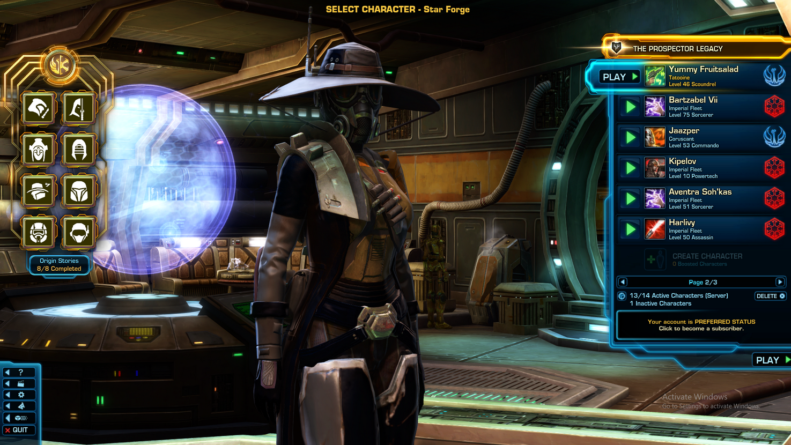

Alec is a tenacious scavenger trying to make a life for himself on the bleak and unforgiving world of Earth. In this now industrial wasteland, where the skies are perpetually shrouded in smog and the land is scarred by the remnants of long-forgotten factories, Alec's story is one of resilience and survival against all odds.
Born into abject poverty an unnamed decaying city, Alec never knew the luxuries of other worlds or the existence of space travel. His family, like countless others, struggled to make ends meet in a harsh and desolate environment. When his parents passed away from illnesses linked to the polluted air and contaminated water, Alec was left orphaned at a young age.
With no formal education or opportunities for betterment, Alec turned to scavenging as a means to survive. With a inpenetrable wall between the wasteland he calls home and the bundles of skyscrapers tower the landscape, he scours the rusted remnants of old machinery, derelict vehicles, and crumbling infrastructure in search of anything valuable that can be traded for meager rations and a place to sleep.
Despite the harsh realities of his existence, Alec possesses a resilient spirit and an unwavering determination to make the most out of his circumstances. He has become a master of repurposing discarded technology, fashioning makeshift tools and gadgets to aid him in his scavenging endeavors.
Alec's dreams are modest, and he is unaware of the existence of civilations on other planets beyond Earth. His focus is on surviving one day at a time in the only world he has ever known, finding solace in the small joys he discovers amid the harsh industrial landscape. He has never contemplated the possibility of life beyond his home planet, as the concept of interstellar travel remains a distant and unimaginable dream in his world of poverty and toil.